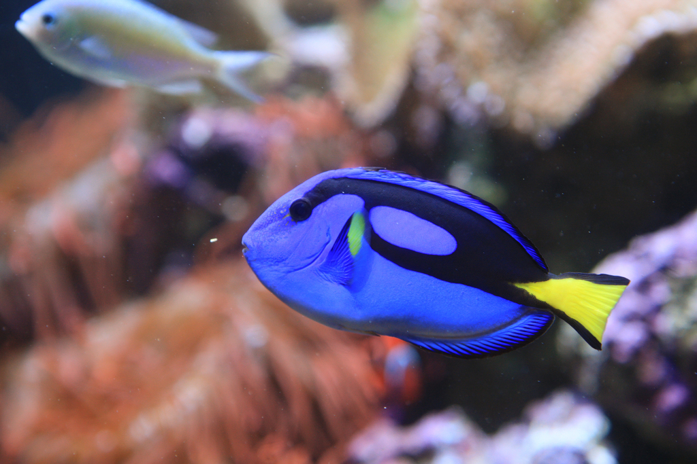

Pez cirujano
Es un pez de cuerpo ovalado y colorido, con una cola en forma de bandera y aletas pectorales amarillas. Los adultos tienen una línea oscura en su aleta dorsal que se desvía hacia la parte de atrás en la cola.
Alimentacion: Algas, plancton, pequeños invertebrados y restos de comida.
Habitat: Arrecifes de coral y en aguas tropicales del océano Índico y el Pacífico. Prefiere aguas claras y poco profundas.
Tamaño: Puede medir entre 31 y 54 centimetros
Categorías de riesgo: Preocupación menor